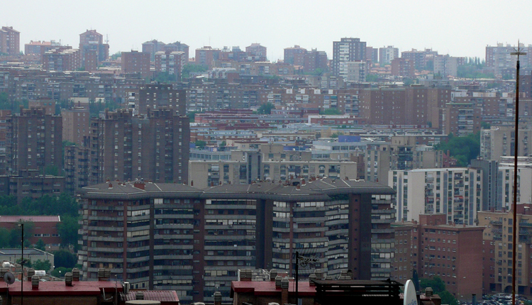

Media Legua
Media Legua es un barrio administrativo de Madrid, enclavado en el distrito de Moratalaz. Limita al este con el barrio de Marroquina y al sur con Fontarrón.
Cuenta con una superficie de 0,999539 km² y un perímetro de 4,674 km. Limitado por el oeste por la M-30, una pasarela peatonal atraviesa dicha vía y comunica al barrio con el de Estrella. En 2022 tenía una población de 17 456 habitantes. Se comunica por Metro mediante la línea 9, que cuenta con 2 estaciones en el barrio: Estrella y Vinateros. Además tiene las siguientes líneas de autobús:
- 20. Sol/Sevilla - Pavones
- 30. Felipe II - Pavones
- 32. Jacinto Benavente - Pavones
- 71. Manuel Becerra - Puerta de Arganda
- 100. Moratalaz - Valderrivas
- 113. Méndez Álvaro - Ciudad Lineal
- E4. Felipe II - Valdebernardo